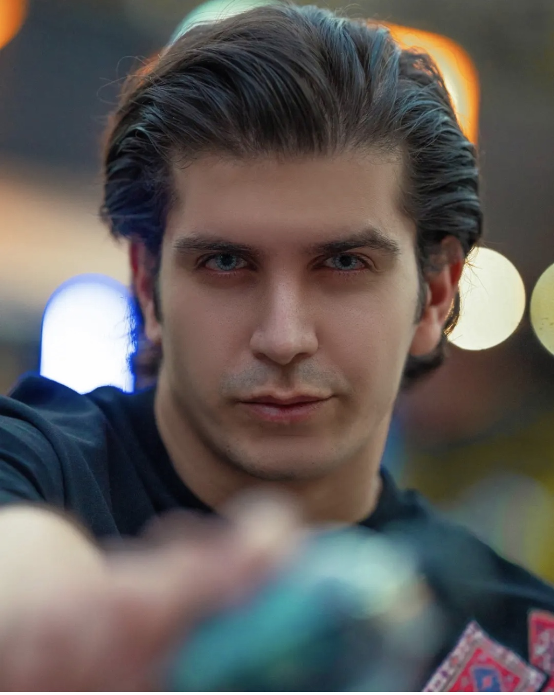
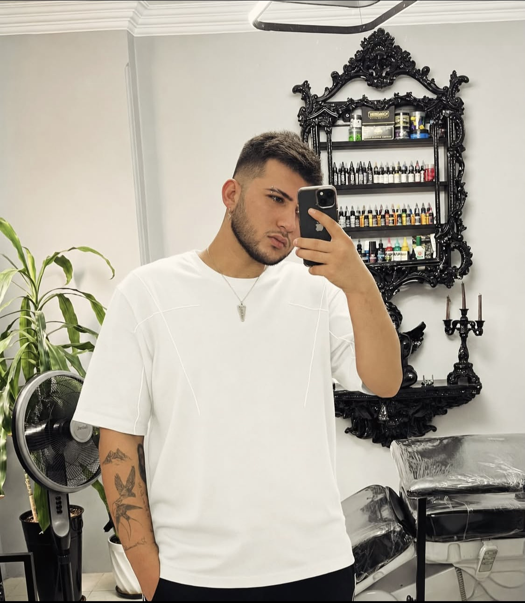
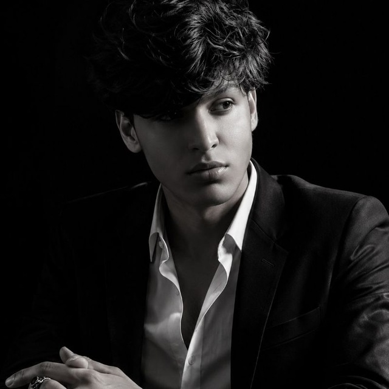

آقای مصطفی روشاک، مدیر مجموعه گیمنت پاتوق، از فعالان حوزه بازیهای ویدئویی و سرگرمیهای دیجیتال است که با علاقه و پشتکار در زمینه مدیریت و توسعه این مجموعه فعالیت میکند. ایشان با رویکردی حرفهای و توجه به نیازها و خواستههای مخاطبان، تلاش میکنند محیطی صمیمی، پویا و استاندارد برای علاقهمندان به بازیهای رایانهای و کنسولی فراهم کنند. مدیریت مجموعهای مانند گیمنت، علاوه بر آشنایی با دنیای بازی و فناوری، نیازمند توانایی برنامهریزی، سازماندهی، مدیریت منابع و ارتباط مؤثر با مشتریان است. آقای روشاک با نظارت بر عملکرد روزانه مجموعه، هماهنگی امور اجرایی و رسیدگی به نیازهای اعضا، نقش مهمی در حفظ نظم و کیفیت خدمات گیمنت پاتوق ایفا میکنند.

تلفن : 09126745422
mostafaroshak@gmail.com
تلگرام : mostafaroshak@
اینستاگرام : mostafaroshak
اهورا کرمی، فردی فعال و چندمهارته است که در حال حاضر در حوزه گیمینگ فعالیت میکند و در گیم نت پاتوق مشغول به کار است. او در کنار فعالیت شغلی خود، سابقه فعالیت در فوتبال را نیز دارد و پیش از ورود به مسیر حرفهای فعلی، بهعنوان فوتبالیست فعالیت میکرده است. اهورا در حال حاضر بهعنوان تتوکار حرفهای فعالیت میکند و با تکیه بر مهارت، دقت و خلاقیت خود، در زمینه طراحی و اجرای تتو تخصص دارد. توجه به جزئیات، ظرافت در اجرا و تلاش برای ارائه طرحهایی باکیفیت، از ویژگیهای مهم فعالیت او در این حرفه به شمار میروند. تجربه حضور در دنیای فوتبال، فعالیت در محیط گیمینگ و مهارت در هنر تتو، مسیر حرفهای متنوعی را برای او رقم زده است. او فردی علاقهمند به پیشرفت و ارتقای تواناییهای خود است و تلاش میکند با کسب تجربه بیشتر، مهارتهای تخصصی خود را در زمینه تتو توسعه دهد و مسیر حرفهای خود را با جدیت ادامه دهد.

تلفن : 09126745422
ahoura@gmail.com
تلگرام : ahoura_alikarami@
اینستاگرام : ahoura.alikarami_10
سیار ناصری، فعال در حوزه گیمینگ و از علاقهمندان جدی دنیای بازیهای رایانهای و کنسولی است. او در حال حاضر در گیمنت پاتوق فعالیت میکند و بهعنوان گیمری حرفهای، بهویژه در بازی کالاف دیوتی، شناخته میشود. او در این بازی بهصورت رقابتی فعالیت دارد و دارای رتبه در سطح ایران است. پیش از ورود به حوزه گیمینگ، در زمینه خیاطی فعالیت داشته و تجربه کاری در این حرفه را نیز در کارنامه خود دارد. در کنار فعالیتهای شغلی و گیمینگ، سیار ناصری بوکسور حرفهای است و ورزش بوکس را بهصورت جدی دنبال میکند. فعالیت در این رشته ورزشی، در کنار تجربههای کاری و مهارتهای گیمینگ، بخش مهمی از مسیر زندگی حرفهای او را تشکیل میدهد. او با علاقه به پیشرفت، رقابت و یادگیری، در تلاش است مهارتهای خود را در زمینه گیمینگ و ورزش تخصصی خود را در زمینه تتو توسعه دهد و مسیر حرفهای خود را با جدیت ادامه دهد.

تلفن : 0937423839
sayar1384@gmail.com
تلگرام : sayar1384@
اینستاگرام : Sayarrr84